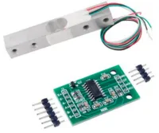
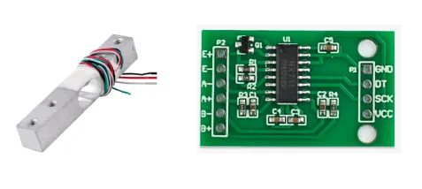
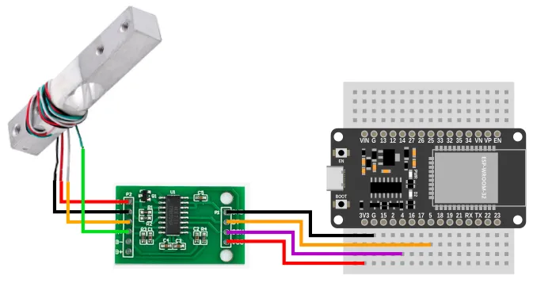
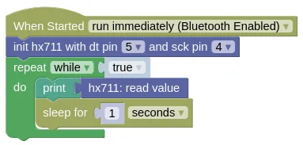

Analog-to-Digital (HX711)

The HX711 is a Analog-to-Digital converter, commonly used with load cells (...shown above) for weight / force measurement.
Pins

| Pin | Description |
|---|---|
| VCC | Power for the sensor. Connect to 3V3. If your device is on USB power, you can also use VIN. |
| GND | Ground pin. This should be connected to the GND pin on the ESP32. |
| DT | Data pin. This should be connected to an input capable pin on the ESP32 (default pin 5). |
| SCK | Serial Clock. This should be connected to an output capable pin on the ESP32 (default pin 4). |
| E+ | Connect to the Red wire on the load cell. |
| E- | Connect to the Black wire on the load cell. |
| A- | Connect to the White wire on the load cell. |
| A+ | Connect to the Green wire on the load cell. |
Wiring

Code
This code will print out measured value every 1 second. It return a unitless value, so calibration is required if you want to measure weight.
Blocks

Python
import hx711
import time
hx711_device = hx711.HX711(5, 4)
while True:
print(hx711_device.read())
time.sleep(1)
Results
You should see in the monitor a value within the range −8,388,608 to 8,388,607 printed every second.
To convert this value to a weight reading, you'll need to calibrate it against a known weight.
class HX711 - read HX711 analog-to-digital converter
Constructors
hx711.HX711(dt_pin, sck_pin)
Creates a HX711 object.
The arguments are:
-
dt_pinAn integer specifying the microcontroller pin connected to DT. -
sck_pinAn integer specifying the microcontroller pin connected to SCK.
Returns a HX711 object.
Methods
HX711.read()
Reads from the HX711.
Returns an integer within the range −8,388,608 to 8,388,607 representing the unitless reading value.